Diseño en tu hogar
¡Que tal! mi nombre es Constanza y este es mi emprendimiento llamado Constantina Deco. En mi instagram @constantina_deco pueden ver mis trabajos, tales como cuadros abstractos, flores, platos de sitio en mdf pintados a mano, flores y coronas de tela, borlas para sujetar cortinas, puerteros, servilleteros, macrame, Lamparas, espejos y bandejas en yute, Kraft y cordón polipropileno. Próximamente la línea blanco con Individuales de tela, camino de mesa, agarraderas, repasadores, almohadones, toallas y muchos proyectos más en camino.
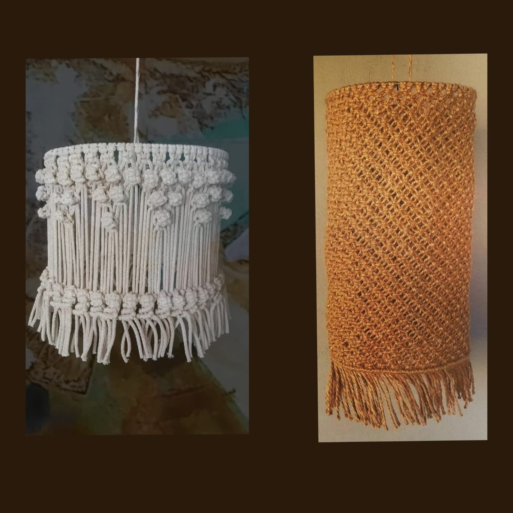
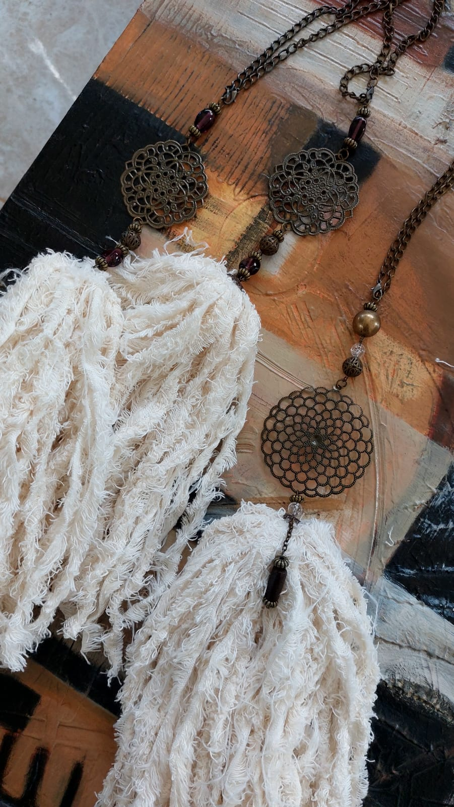
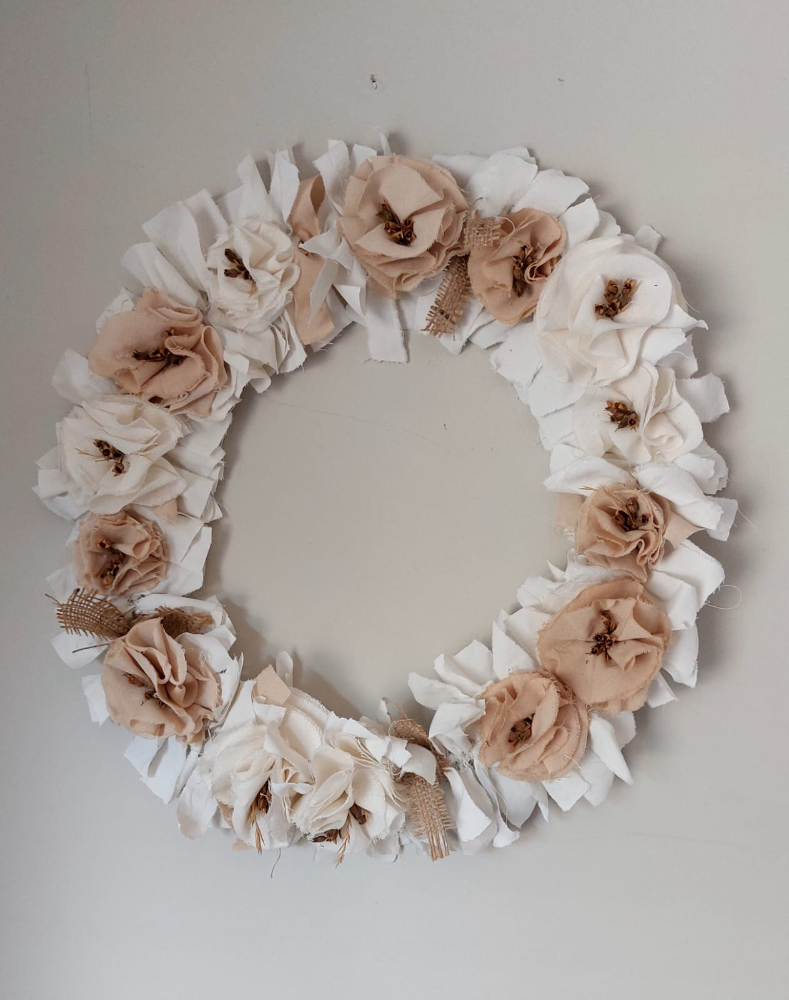
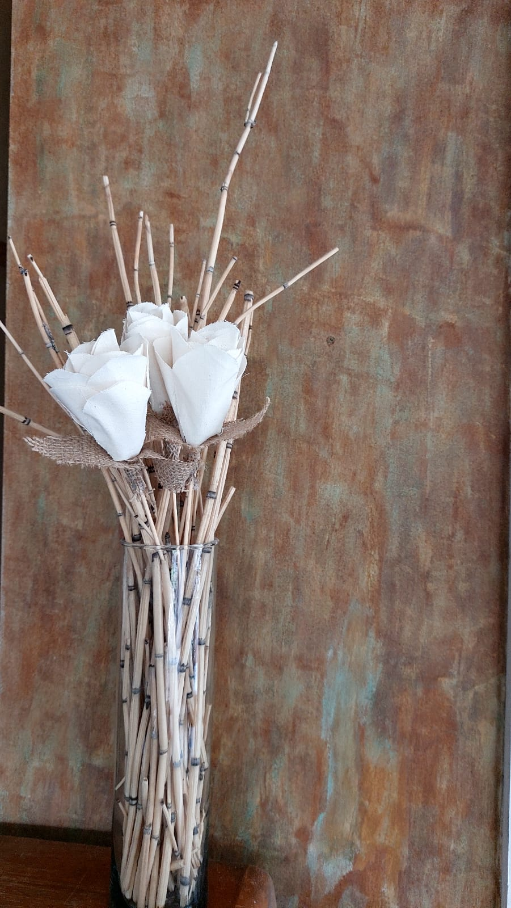
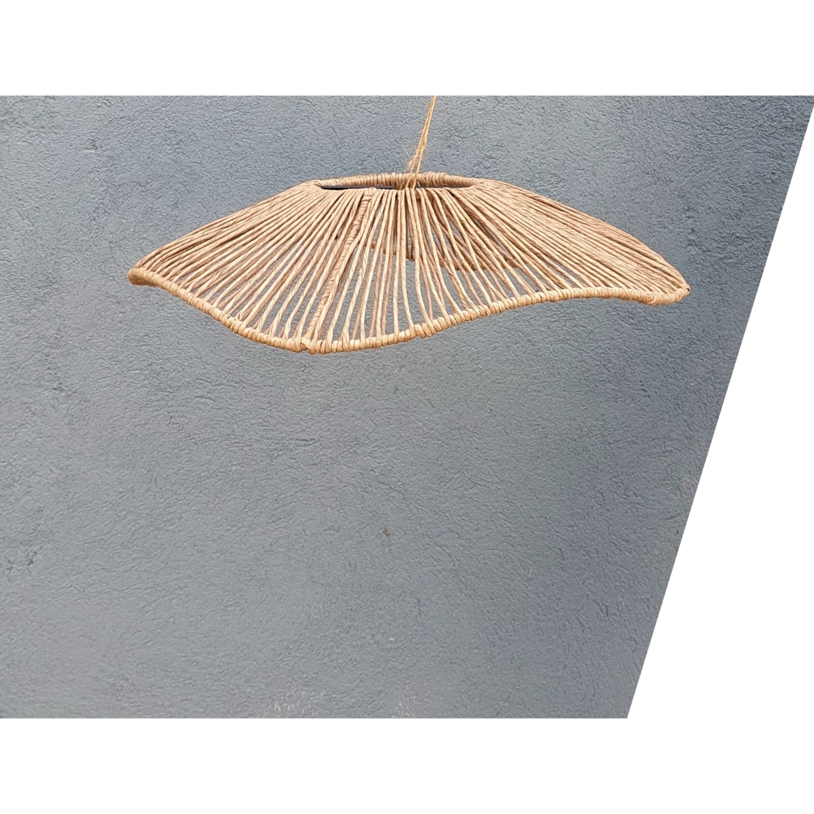
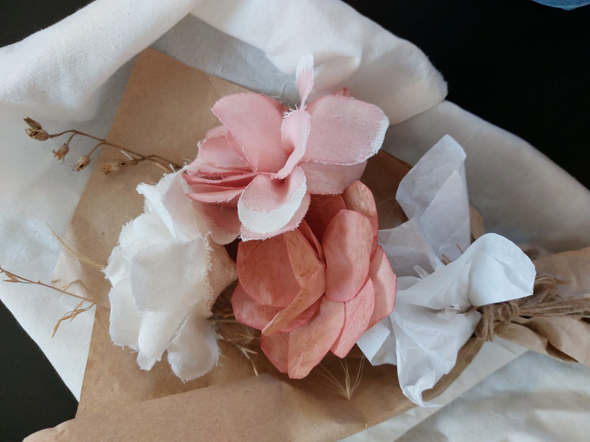
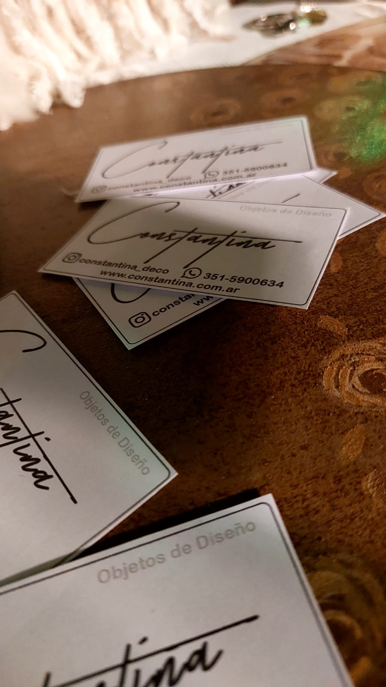
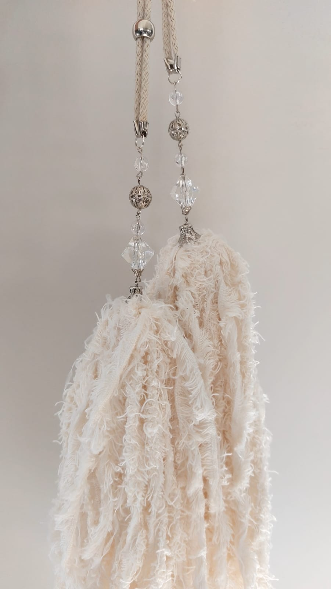
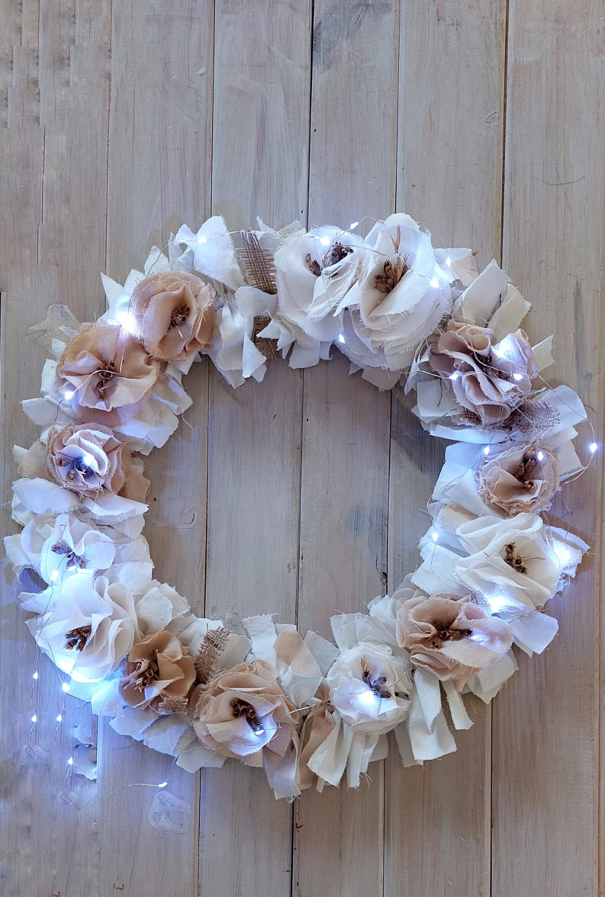
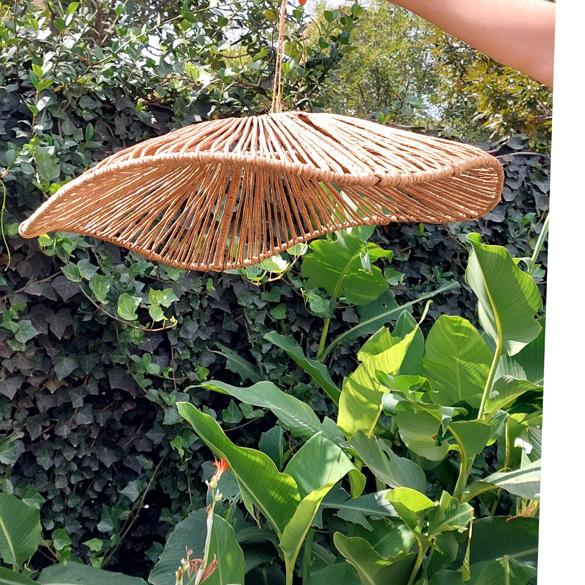
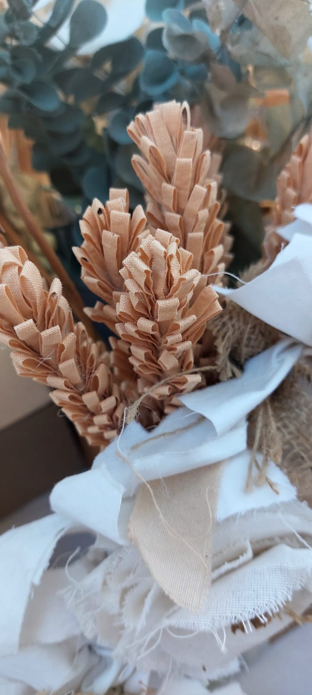
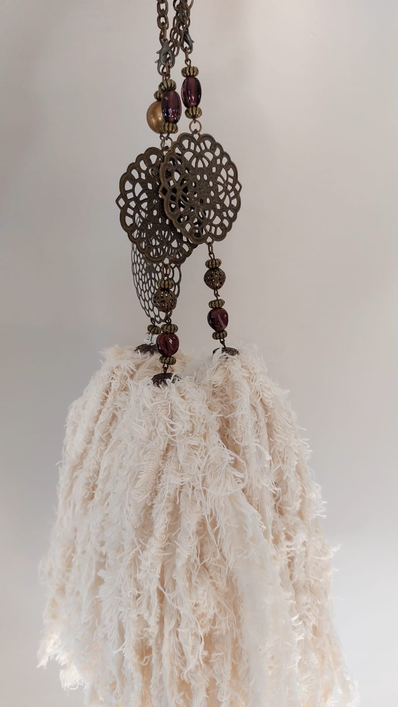